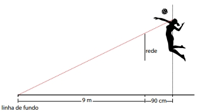

01. Um ingresso para uma peça de teatro será sorteado entre os
estudantes de uma turma. Há quatro rapazes a mais do que
moças nessa turma. Se a probabilidade de um rapaz ser sorteado é 5/9, o número total de estudantes dessa turma
02. Considere 9 números cuja soma é 540. Ao ordenar esses
números do menor para o maior, o número N ocupa a 5ª
posição. Sabendo-se que a soma dos 5 menores é 180 e
a soma dos 5 maiores é 405, o valor de N é
03. Uma caixa de papelão tem divisórias que formam doze
compartimentos para armazenar bolas de Natal. Em cada
compartimento cabe apenas uma bola. Ana numerou os
compartimentos e guardou 12 bolas idênticas entre si a
menos da cor. Das 12 bolas guardadas por Ana, 6 são vermelhas, 4 douradas e 2 azuis.
O número de maneiras distintas que Ana pode ter guardado as bolas é igual a
04. A escola de inglês QuickSpeak teve o mesmo número de
matriculados em 2021, 2022 e 2023 nas turmas iniciais.
Em 2022 a escola criou duas turmas iniciais a mais do que
tinha em 2021 e, com isso, o número médio de alunos por
turma inicial diminuiu em 14. Novamente, em 2023, mais
duas turmas iniciais foram criadas e o número médio de
alunos por turma diminuiu em 6 em relação à 2022.
Qual o número de turmas iniciais que a QuickSpeak tinha
em 2021?
05. André precisa criar uma senha com três dígitos distintos
que devem ser escolhidos do conjunto {0, 1, 2, 3, 4, 5}. Ele
decide que o dígito central deve ser a média de seus vizinhos. O número de senhas distintas que André pode criar é
06. No início deste ano, Alberto abriu uma conta em uma rede
social tendo Bernardo como único amigo, e Bernardo fez o
mesmo, no mesmo dia, tendo Alberto como único amigo.
Alberto planeja agregar 100 amigos por ano à sua rede,
enquanto Bernardo planeja dobrar seu número de amigos
a cada ano.
Se tudo correr como o planejado, a primeira vez em que
Bernardo terá mais seguidores do que Alberto será em
07. A linha superior da rede de voleibol feminino tem 2,24 m
e o fundo da quadra adversária está a 9 m de distância.
Uma jogadora pula para cima, com seus olhos a 90 cm de
distância horizontal da rede.

A menor altura que seus olhos devem atingir para que ela
veja a linha de fundo da quadra por cima da rede é de,
aproximadamente,
08. Duas empreendedoras vendem bombons a R$ 2,50 por
unidade. A empreendedora 1 tem custo fixo mensal de
R$ 1.000,00 e custo de produção de R$ 1,50 por bombom,
enquanto a empreendedora 2 tem custo fixo mensal de
R$ 200,00 e custo de produção de R$ 2,00 por bombom.
O lucro é o valor obtido nas vendas menos os custos fixos
de produção.
Em um certo mês, essas empreendedoras tiveram o mesmo lucro. Se a empreendedora 1 vendeu 2 000 bombons, a
empreendedora 2 vendeu